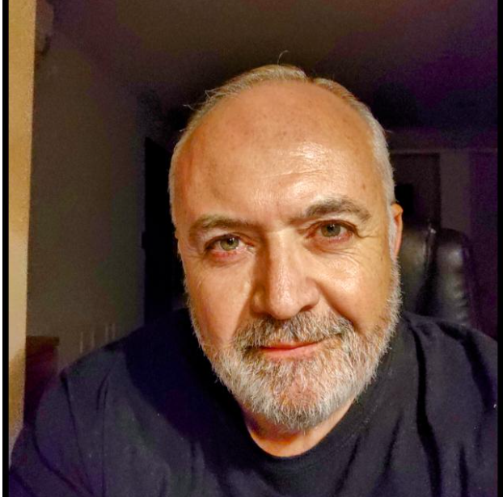

POWERED BY
Este es nuestro equipo de Desarrolladores
Argentina Programa / Comisión 184 / Grupo 7
TORO, Federico Benjamín
Provincia de Tucumán
Mantenimiento Industrial
Me motiva la creación

HOLLMAN, Mercedes Elizabeth
Provincia de Mercedes
Ocupación de Mercedes
Expectativas de Mercedes
RODRIGUEZ, Roberto
Ciudad de Buenos Aires
Licenciado en Seguridad
Adquiriendo nuevas herramientas
DIAZ, Fernando Alfredo
Provincia de Tucumán
Desarrollador independiente
con deseos de actualizarse

MOLINA, Leonardo Mario
Provincia de San Juan
Informático - Coach Ontológico
Ampliar conocimientos
CASTRO CORONEL, Miguel
Provincia de Buenos Aires
Docente
Desarrollar en tecnologías actuales